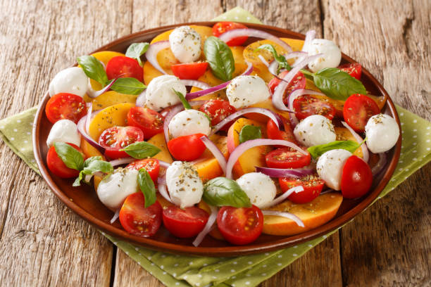

Delicious Bites Menu
Appetizers

salade caprese Tomates fraîches, mozzarella
basilic arrosés d'un glaçage balsamique
Salade de nouilles épicée et brochettes de boulet à la citronnelle de Nongyao Truadmakkha
Salade aux herbes, vinaigrette à la moutarde et au miel
Salade de concombre aux crevettes nordiques
Bruschetta: Pain grillé garni de tomates hachées, ail et basilic frais.
Bruschetta aux oeufs mollets
Bruschetta aux olives
Bruschetta au houmous
Gougères
: Petits choux au fromage servis chauds.
Main Courses
Saumon grillé
: Filet de saumon assaisonné et grillé à la perfection, servi avec une sauce au beurre citronné.
Poulet au citron
: Blanc de poulet mariné, rôti et servi avec des légumes de saison.
Pâtes Primavera
: Pâtes fraîches avec des légumes de saison et une sauce légère à l'ail.
Desserts
Fondue au chocolat
: Assortiment de fruits et de guimauves servis avec une riche fondue au chocolat
Tarte Tatin
: Tarte aux pommes caramélisées servie tiède avec de la crème fraîche.
Mousse au chocolat
: Mousse légère et aérienne au chocolat noir, garnie de crème fouettée.
Contactez-nous pour les réservations
email fatma goul @ live.com
tel number 21698956956